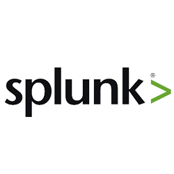
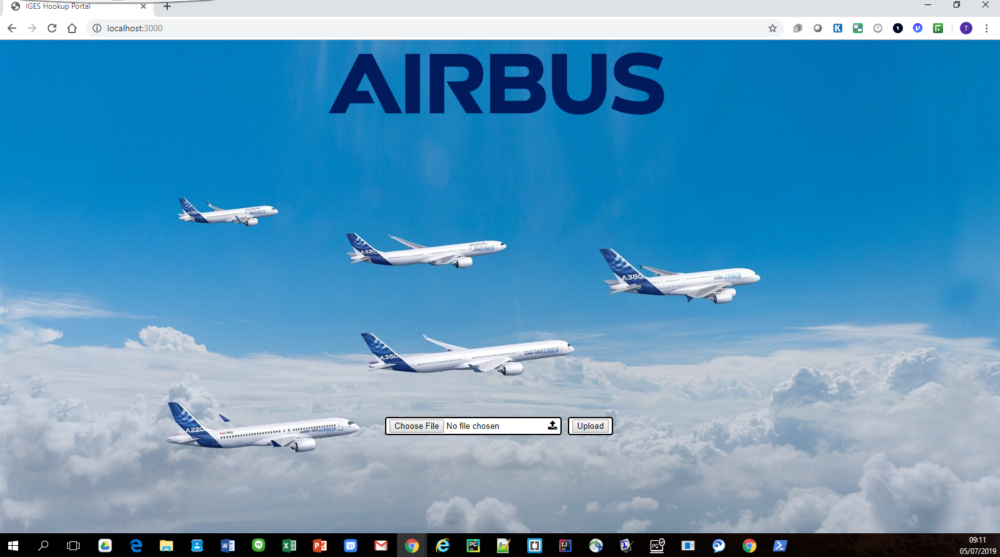

Software developer - Web Designer - Sports Enthusiast
Portfolio

About me
Final year Computer Science student with relevant industry experience seeking a graduate software engineering position.
Currently, I'm an applications services developer at Airbus Uk working on data analytics, machine learning, Amazon Web Service, and software development projects as part of their digital transformation.
My role is to work on innovation projects and manage a team of early-career employees by demonstrating effective team-work, communication, and leadership skills to ensure project deadlines are met by using agile principles.
Beyond this, I am working on various side-projects, including android mobile development, where my goal is to bring my ideas to life to help make the world a better place. This is the area where my passion for technology and software allows me to express myself and test the bounds of my imagination. This curiosity has allowed me to build my portfolio in various industry sectors as seen in my porfolio.
I can be described as being an enthusiastic, confident, and hardworking individual with a passion for software development. I am always looking to challenge myself and grow as a person by adapting to various work cultures.
Skills at a glance:
Software: Python, Java
Web: HTML, CSS, Javascript, Boostrap, SQL
Mobile: Android
Machine learning and Deep learning
Work Experience
Wiser
August 2019 - Present
Software Specialist Ambassador
Wiser is a home for young people who dream big and expect more; an environment where creative meets recruitment to build and transform employer brands. As part of the Wiser Tech Academy.
Actively promoting opportunities to students at the University of Cardiff for clients including DeepMind, Nike, Just Eat, Deutsche Bank, Fidelity International, OddsChecker, Worldpay, and Argos.
Capitalising on my extensive campus network by reaching out to different societies, clubs and student groups.
Encouraging students from all different backgrounds and courses to consider a career with some of the world’s best brands
Cardiff University / Prifysgol Caerdydd
July 2019 - Present
Student Mentor
Developed leadership through facilitating meetings and communicating information to my group. Formed relationships for a safe environment through my calm demeanour. Organizing meetings and icebreaker events to help cascade important information in a relaxed informal environment.
Cardiff University STEM Ambassador
Enhanced and enriched the teaching and learning of STEM subjects based on my own past experiences. Organizing activities which aim to include a diverse demographic
Placement PAL
Advising and supporting 2nd-year Computer Science students through the placement year application process.
Airbus UK
July 2018 - July 2019
Application Services Developer Intern
Root cause analysis focal point to maintain 99% Service Level Agreement (SLA)
Consolidating reporting data from change management systems into a single system using Splunk which reduced reporting time by 50%.
Project manager and collaborator for the successful development of a full host migration onto AWS.
Developed a Python natural language system to help identify links between service data using agile development methodologies.
Volunteered to become an Ablaze Reading Buddy and Number Partner to help with the literacy and numeracy development of primary school children.
First Year: Computational Thinking (70%), Problem Solving with Python (62%), Professional Skills (82%), Developing Quality Software (72%), Architecture and Operating Systems (74%), Maths for Computer Science (65%), Object Orientated Java Programming (70%), and Web Applications (71%)
Second Year: Database Systems (64%), Data Processing and Visualisation (78%), Object Orientated Applications (74%), Human Computer Interaction (78%), Informatics (78%), Introduction to the Theory of Computation (68%), Communication Networks and Pervasive Computing (65%), Algorithms and Data Structures (62%), and Group Project (69%)
Activities and Societies: Cardiff Award, Afro-Caribbean Society, Cardiff University Football Team, Computer Science Society, STEM Student Ambassador, Placement PAL, Student Mentor
The host migration of the Airbus Open Wiki (AOW) from a computer under a desk to a cloud-based solution.
The Motive
The Landing Gear department within Airbus approached my team as they were looking to migrate the current Airbus Open Wiki (AOW). Currently, it was being locally hosted on a computer under a desk. Therefore, they wanted a cloud-based solution that would be more flexible, robust, and secure.
This was also an opportunity to explore Amazon Web Service (AWS) as a solution for future projects. Within Airbus, there is a big emphasis on digital transformation. Through exploring this service, it would help the business in understanding how it could be leveraged for other business areas. AWS had not been utilized in the UK so my team was providing a starting point for many other projects in the future.
The Execution
I took on the task of producing the architecture required to host the current AOW. All component choices were made once we had understood the requirements of the AOW. It was a matter of identifying current AOW components and mapping them to what was available on AWS. We used Matomo for data analytics so we could visualize usage rates.
The architecture involved having the AWS instance and within that a VPN. This VPN would then contain the AOW components. An EC2 of type t3.nano would contain the building block components of AOW on AWS e.g. MediaWiki and SpinxSearch. An S3 bucket containing the AOW images would then link to this EC2.
Once the architecture diagram had been produced, my team and I then began work on the AWS management console. From this point, my role as a lead project manager involved holding people accountable for the progress of the project. We have been able to produce a working implementation of my architecture diagram and have begun the testing phase. We have produced unit tests and test [ages to make sure the solution 100% works. No issues have been found so we can progress onto the next stage of the project.
Next Steps
Now that the infrastructure has been put in place, we now need to perform full data migration. Once migrated, we will need to deploy the solution for commercial use within Airbus. We are also looking into utilizing Ansible scripts.
Natural Language Processing
Overview
I proposed the development of a Natural Language Processing (NLP) system for the analysis of incident tickets. To be able to leverage data and find possible links for improved issue resolution speed and accuracy.
The Motive
To make use of emerging technologies and in-line with the digital transformation at Airbus, I proposed the use of NLP. Within Airbus, I noticed that there was a lot of data that could be leveraged to help improve existing business processes. Therefore, the development of an NLP system seemed like a promising area to explore.
The Execution
The project began by importing the building block modules for this project. I made use of NLTK, FuzzyWuzzy, and the Airbus Custom NLP library "nlp4airbus".
I first created a function that would be dedicated to cleaning the incoming CSV data. Using the CSV Dictreader, I was able to import the data and apply cleaning on each row through a for-loop. I applied cleaning to the "Summary" row of the data. Using RegexpTokenizer, I removed all punctuation and tokenized the data. Once tokenized, I created a list of specific terms to remove and removed them from the data. I then removed all stopwords from the data as they provided little value. Following this, I untokenized the summary descriptions to give a more readable output for the user. I would then create a dictionary of the incident ID and the associated cleaned summary description.
Once the data had been cleaned, I created a lookup function. It would ignore case and use a generator function to create matches. The search function would call on this lookup function. Using FuzzyWuzzy, I was able to extract matches by specifying a scorer to use. I chose fuzz.ratio as it gave me the desired output.
Next Steps
With this implementation, the business is now looking into how to best utilize my system for incident management.
Android Application
This project is still on-going. Full details will be made available upon completion.
Splunk Data Analytics Dashboard
Overview
As part of my internship, I worked on improving the incident reporting process within Airbus. This project was proposed as a way of centralizing all incident reporting tools into a single data analysis system.
The Motive
Current processes within Airbus used BMC Remedy to manage application incidents. As part of my job role, I would have to use this system for reporting to managers weekly. Over time, I saw that this system was not efficient as there was no way for each Application Service Package Manager (ASPM) to manage their own portfolio.
Through research, I discovered that Splunk was a potential solution for this issue. It would allow each manager to produce customized dashboards to effectively manage their product portfolio.
The Execution
Once I had identified a potential solution, I began to identify all the application sources to be centralized. By identifying these, I would then be able to contact the relevant areas of the business. It was important to understand the reporting capabilities provided by each application. This allowed me to clearly understand what value each application had towards incident management and reporting.
BMC Remedy, Charm, Aspire, Version One, and Service Now were the data sources that needed centralizing into Splunk. By contacting each business owner of the products, I was able to gain access to their APIs to create a continuous data stream linked to Splunk. With API access granted, I used the various features within Splunk to create the dashboards for the ASPMs.
The end result was a fully customizable dashboard that could be used by all ASPMs. When demonstrated in the weekly team meeting, it was given positive feedback and approval to move onto the next stage of development.
Next Steps
Now that this solution has been produced, it will be presented to business to demonstrate how it will add value. Once approved, this new system will be deployed for use within Airbus.
Airbus IGES Hookup Portal

Overview
I developed a web portal for Airbus to allow 3D CAD drawing conversion and transfer. Utilized Node.js and its NPM package manager. Also developed using Pug/Jade, Javascript, CSS, Web APIs (XMLHttpRequest), Bootstrap, and JQuery.
The Motive
As part of the digital transformation within Airbus, they were upgrading various legacy systems. One of which was DVO Browser which had allowed the transfer of 3D engineering drawings. The transformation involved developing a new in-house system named CCD Converter. A consequence of this was that by upgrading to this new CCD system, some functionality was going to be lost.
An important feature being lost was one that allowed the transfer of IGES, IG2, and IGS file types to a server. Therefore, a need for a system with the missing functionality naturally arose. This is where I took the opportunity to lead the development of the IGES, IG2, IGS hookup portal. The aim was to allow the Airbus server to send files to the CCD converter server. My proposed idea was to create a user Interface.
The Execution
Within our team, we identified the components required within this new system. From this, we delegated tasks. I was responsible for designing and building a user interface that would interact with the backend Node.js runtime environment on the server-side.
The front-end of the system was created using the HTML and the Bootstrap framework for a modern and responsive user interface. I added a form-input functionality that allowed the user to select which files to upload. I made sure to set file type restrictions to IGES, IG2, and IGS to prevent error messages upon file upload. As part of the form input, I also created form-validation to check if a user had selected a file, and if not, to display an alert message if they tried an empty file-input upload. The form-validation also called upon a separate function that executed an XMLHttpRequest.
The aim of this XMLHttpRequest function, called formUpload(), was to allow interaction with the server. The user would select a file to upload, and upon pressing upload, it would execute 'onsubmit = return formUplaod()' once the event had been triggered which performed the XMLHttpRequest. Whilst this was happening, a progress bar would appear followed by an alert message letting the user know if it had been successful. The benefit of this was that this process would happen without having to refresh the page as it updated the web page without being disruptive.
Next Steps
The next steps of this project would be produce unit tests to ensure robustness as well as refactoring code if necessary. There is also the opportunity to retrofit the system as user needs evolve.
Volunteering
Overview
Over the years, I have been involved in various volunteering and outreach programs. Helping others to have the same standard of life as most of us is something I am passionate about achieving.
Reading Buddy and Number Partner
During my time as a reading buddy and number partner, I would spend an afternoon per week engaging with primary school children to help improve their literacy and numeracy abilities. I would deliver the learning in various forms such as simply reading to them or coming up with games that would help them learn.
From this experience, I learned the importance of adapting to various scenarios. Assistance would range from helping children who were regarded as being gifted and talent to helping those who found is more challenging to grasp concepts. I would have to quickly identify what sort of child I was working with and then tailor my approach to be able to deliver the best learning experience. This experience was mutually beneficial as it also helped to develop mt ability to adapt to various scenarios and tailor my approach based on what is required.
South-West Youth Ambassador
As the South-West Youth Ambassador, I was responsible for coordinating with schools in my region to raise awareness for female human rights in Africa. My role would be to organize meetings and fundraising events for all South-West schools. As the lead, I would communicate with other school ambassadors on how to organize the fundraising events, including generating awareness and finding volunteers to help run the day events.
The most important skills I learned from this experience were organization, leadership, and effective communication. Without these skills, the success of these events would not have been possible. We achieved our goal of raising awareness. We worked in a team of change agents wanting to change the lives of females across Africa by giving them an education. Our work was recognized. We were invited to attend the annual 'Geneva Summit for Human Rights and Democracy' sponsored by a coalition of non-government organizations.